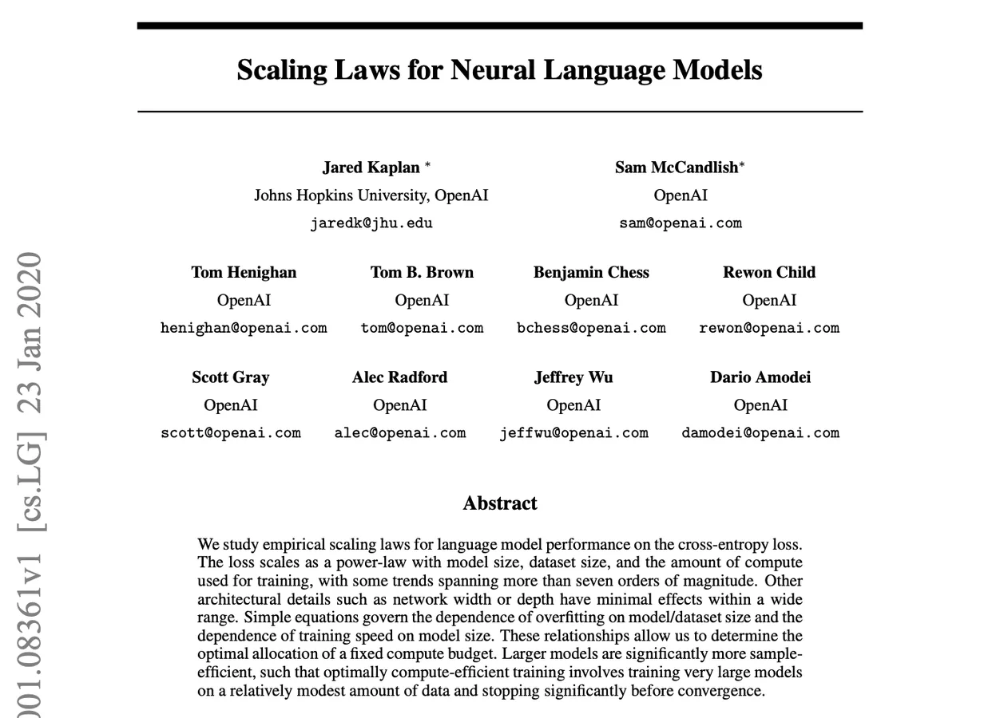
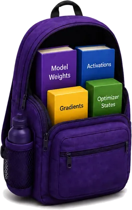

AI Research Foundations
Make AI models fit, run fast and cost less
A hands-on guide to GPUs: how to measure compute and memory, find the bottleneck, and use the tricks real teams use to train and serve models.
Hi, I'm Ben. I've heard "you need GPUs for AI" a hundred times, but I couldn't tell you why, how much memory a model needs, or why my training run crashed. Let's figure it out together, one idea at a time.
Your journey
Why GPUs?
CPUs vs GPUs, and why AI is a parallel problem.
Module 2Measuring Compute and Memory
Estimate FLOPs, training time, cost and GPU memory.
Module 3GPU Bottlenecks
Find what limits a GPU, then see how FlashAttention moves less data.
Module 4Single-GPU Memory Optimization Tricks
Quantization, mixed precision and gradient accumulation.
Module 5Multi-GPU Training
Data, tensor and pipeline parallelism, plus ZeRO.
Module 6Inference Engineering
Prefill, decode, KV cache, batching and speculative decoding.
Practise and go further
Module 1 of 6
Why GPUs power modern AI
Every model you use, from chatbots to image generators, runs on GPUs. The reason is simple once you see the shape of the work.
CPU vs GPU
CPU: a few brilliant experts
A handful of powerful cores, each built to finish one complicated, step-by-step task as quickly as possible. Perfect for your operating system, browser, database and Python code.
GPU: an army of workers
Thousands of simpler cores built to do the same simple maths on lots of data at the same time. First built to colour millions of pixels at once, now the engine of AI.
| CPU | GPU | |
|---|---|---|
| Cores | About 4 to 128 powerful cores | Thousands of simple cores (an H100 has 16,896 CUDA cores) |
| Built for | Low latency: finish each task fast | High throughput: finish lots of tasks together |
| Great at | Branching logic, tasks that depend on the previous step | The same operation on huge arrays of numbers |
| In AI | Loads data, runs the training loop, coordinates | Does the heavy maths: matrix multiplications |
They work as a team. The CPU is the manager that prepares data and tells the GPU what to do. The GPU is the factory floor that does the maths.
Why GPUs Matter in Modern AI: Matrix Multiplication
Inside a neural network, almost everything is a tensor: a grid of numbers with one, two or more dimensions. Inputs, weights, activations and embeddings are all tensors, and a model's layers mostly multiply tensors together.
Multiplying a 4,096 × 4,096 weight matrix by one input vector takes about 16.8 million multiply-and-adds, and none of the outputs depends on another. A CPU works through them a few at a time. A GPU hands them out to thousands of cores at once.
Inside an NVIDIA GPU
A GPU is organised in layers, like a company with departments and teams.
Streaming Multiprocessors (SMs)
The departments. An H100 has 132 of them, each running many calculations at once.
CUDA cores
Inside each SM: general-purpose units that multiply and add.
Tensor Cores
Specialists for matrix multiplication, built for low precision like BF16 and FP8. They do most of the work in AI.
HBM (VRAM)
High Bandwidth Memory stacked next to the chip. Holds the model and its data.
How work is split up
a function that runs on the GPU
tiny units of work
run each instruction together
You rarely write kernels yourself: PyTorch and NVIDIA's libraries launch them for you. But this picture explains why GPUs love big, regular blocks of work.
The memory ladder
Not all GPU memory is equal. The closer memory sits to the cores, the faster and smaller it is.
Capacity is how many boxes the warehouse holds. Bandwidth is how fast boxes move in and out. AI needs both, and running out of the first is the famous CUDA out of memory error.
Connecting GPUs
PCIe
The standard road between devices in a computer. Fine for one GPU; slow for GPUs that constantly swap data.
NVLink and NVSwitch
NVIDIA's high-speed highways between GPUs, around 900 GB/s on an H100. Essential for multi-GPU training (Module 5).
Meet some real GPUs
You will see these names in papers, cloud consoles and job adverts. The numbers are approximate and vary by version.
| GPU | Generation | Memory | Bandwidth | Known for |
|---|---|---|---|---|
| T4 | Turing (2018) | 16 GB | ~320 GB/s | The free GPU in Google Colab; great for learning and small inference |
| RTX 4090 | Ada Lovelace (2022) | 24 GB | ~1 TB/s | A consumer gaming card that many researchers use on a desk |
| V100 | Volta (2017) | 16 or 32 GB | ~900 GB/s | The first GPU with Tensor Cores |
| A100 | Ampere (2020) | 40 or 80 GB | 1.6 to 2 TB/s | The workhorse of large-scale AI for years; 312 TFLOPS in BF16 |
| H100 | Hopper (2022) | 80 GB | ~3.35 TB/s | Built for transformers: FP8 and the Transformer Engine; about 990 TFLOPS in BF16 |
| H200 | Hopper (2024) | 141 GB | ~4.8 TB/s | An H100 with much more and faster memory, ideal for big models |
| B200 | Blackwell (2024) | 192 GB | ~8 TB/s | The newest generation: more compute, memory and FP4 support |
NVIDIA isn't the only option. AMD makes data-centre GPUs like the MI300X (192 GB of HBM), and Google's TPUs are AI accelerators built around the same idea: lots of parallel matrix maths fed by fast memory. Each generation moves in the same direction: more compute, more memory, more bandwidth, faster links and lower precision.
The GPU system in one picture
Compute cores
The workers. They do the calculations in parallel.
VRAM (HBM)
The warehouse. On AI GPUs this is HBM, the High Bandwidth Memory stacked next to the chip. It holds parameters, activations and everything else the model needs.
Memory bandwidth
The conveyor belt. Moves data between memory and the cores.
So a GPU isn't "faster" at everything. It's faster at lots of simple maths at once, which is what AI needs. Next question: how much maths, and how much memory?
Module 2 of 6
Measuring compute and memory
Before you train or run a model, two questions decide which GPU you need: how much compute does it take, and how much memory does it need?
Why bigger AI keeps getting better
Kaplan et al. (2020) found that as we scale model size, data and compute, a language model's loss falls in a smooth, predictable way, across more than seven orders of magnitude.
That predictability is why labs keep building bigger models. It also means every step up needs more GPUs, more memory and more money.

Why measure compute and memory?
Before you train or run a model, you need answers to two questions. They decide which GPU you rent, how many you need, how long you wait and how much you pay.
How much compute does my model need?
Tells you how long training takes and what it costs. Get it wrong and a "one-week" run takes three months.
How much memory does my model need?
Tells you whether the model fits on the GPU at all. Get it wrong and you hit CUDA out of memory before training even starts.
Measuring Compute
Compute is the actual mathematical work a model does. We measure it by counting operations.
FLOPs and FLOPS
A FLOP is one floating-point operation, like one multiply or one add. Multiplying an m × k matrix by a k × n matrix takes about 2 × m × k × n FLOPs (one multiply and one add for each term).
FLOPs (lowercase s)
A count: how much work a job needs.
FLOPS (capital S)
A speed: how much work a GPU does per second.
Estimating training compute
For a standard transformer, training compute has a famous shortcut:
Measuring Memory
Memory decides whether a model can run on a GPU at all. If everything it needs doesn't fit in VRAM, the job crashes with CUDA out of memory, however fast the GPU is. So before choosing a GPU, we add up what has to be stored.
How numbers are stored
Every number in a model is stored with a fixed number of bits. More bits means more precision, and more memory.
| Format | Bytes per number | Used for |
|---|---|---|
| float32 | 4 | Classic training, optimizer states |
| bfloat16 | 2 | Modern training and inference: same range as float32, less precision |
| int8 | 1 | Quantized inference |
| int4 | 0.5 | Aggressive quantized inference |
A 7B model in bfloat16 needs 7 × 10⁹ × 2 bytes = 14 GB just for its weights. But weights are only part of the story.
What fills GPU memory during training
To learn, the model must remember how it got its answer and how to improve it, so training stores four things:
Weights (parameters)
The model itself: every number it has learned so far.
Gradients
One per parameter: how each weight should change to reduce the loss.
Optimizer states
Adam keeps two per parameter: momentum (a running average of gradients) and variance (a running average of squared gradients).
Activations
The outputs of every layer, saved during the forward pass so the backward pass can compute gradients.
What fills GPU memory during inference
When we only run the model, nothing is learned, so gradients and optimizer states disappear. Three things remain:
Weights
Still the whole model, usually the biggest item.
Temporary activations
Only the current layer's outputs, thrown away as soon as the next layer has used them.
KV cache
Keys and values of earlier tokens, kept so they aren't recomputed for every new token (Module 6).
The role of batch size
The batch size is how many examples (or users) the GPU processes at once. It splits memory into two kinds:
Fixed by the model
Weights, gradients and optimizer states depend only on the number of parameters. Changing the batch size doesn't change them.
Grows with the batch
Activations in training, and the KV cache in inference, are stored for every example. Double the batch size and they double. Longer sequences grow them too.
That's why the classic fix for an out-of-memory error is to lower the batch size: it shrinks the part that grows, without touching the model.
Training needs about 4× the weights plus activations, while inference needs little more than the weights. That's why a model you can run on a laptop can still be impossible to train there.
Module 3 of 6
What is limiting my GPU?
Before optimizing anything, find the bottleneck. A GPU is usually held back by one of four things.
Compute-bound
The cores are busy doing maths.
Memory-bound
The model or data doesn't fit in VRAM.
Memory-bandwidth-bound
Data can't reach the cores fast enough.
Communication-bound
GPUs wait on data from each other.
A GPU has two kinds of memory
Compute cores
Do the maths
SRAM
Tiny, very fast, on the chip
⇄
HBM (VRAM)
Huge, but much slower to reach
On an H100, on-chip SRAM is measured in tens of megabytes, while HBM holds 80 GB and moves about 3.35 TB per second. Every trip to HBM costs time.
Attention builds a big table
Easy maths, huge data: arithmetic intensity
An H100 can do about 300 FLOPs in the time it moves one byte from HBM. Operations with far fewer FLOPs per byte, like softmax over the attention table, leave the cores waiting. That is memory-bandwidth-bound.
FlashAttention: move less data
Module 4 of 6
Pack the bag smarter: single-GPU tricks
Your GPU memory is a backpack. When it overflows, you can buy a bigger bag (expensive), pack smarter (this module), or share the load (Module 5).

Quantization
Smaller items: paperbacks instead of hardcovers.
Mixed precision
Mix sizes: full folders only for important documents.
Gradient accumulation
Several smaller trips instead of one overloaded one.
Quantization: keep fewer digits
We already do this with π: 3.14159265 becomes 3.14. Quantization stores each weight with fewer bits, so it takes less memory and less time to move, at a small cost in accuracy.
Mixed precision: fast where we can, precise where we must
Most of the maths (forward and backward passes) runs in bfloat16. A float32 copy of the weights, the master weights, receives the updates. Why? Try it.
Gradient accumulation: several trips
Module 5 of 6
Multi-GPU training: share the load
Sometimes one bag isn't enough. The model doesn't fit, or training would take months. Then we split the work, and the art is choosing what to split.
If I give my friends part of the load, they have to talk to each other. So every strategy trades memory or time for communication.
| Strategy | What is split | Each GPU holds | Talks when | Use it when |
|---|---|---|---|---|
| Data | The batch | A full copy of the model | After every step (gradients) | The model fits; training is too slow |
| ZeRO / FSDP | Optimizer states, gradients, weights | A slice of the training state | Every step, gathering slices | Training state doesn't fit |
| Tensor | Each layer's matrices | Part of every layer | Inside every layer | Layers are huge; GPUs share fast NVLink |
| Pipeline | The layers | A stage of consecutive layers | Between stages (activations) | The model is deep and spans machines |
1. Data parallelism
Every GPU gets a full copy of the model and a different slice of the batch. After the backward pass, the GPUs average their gradients with an all-reduce, so every copy takes the same update.
The volume per GPU barely changes as you add GPUs: it approaches 2M. But every step must wait for it, which is why 8 GPUs rarely give 8× the speed.
2. ZeRO and FSDP: stop storing copies
Plain data parallelism stores the full training state on every GPU. With mixed-precision Adam that is about 16 bytes per parameter: 2 for bfloat16 weights, 2 for gradients and 12 for float32 master weights and Adam's two states. ZeRO shards this state across GPUs instead.
3. Tensor parallelism: split each layer
A single matrix multiplication is split across GPUs. In a transformer MLP, the first weight matrix is split by columns and the second by rows, so each GPU computes its half end to end and the GPUs only need one all-reduce at the end of the block.
Because GPUs talk inside every layer, tensor parallelism needs very fast links. It is usually kept within one machine, where GPUs share NVLink at around 900 GB/s, rather than across machines on a network that is often 10 to 20 times slower.
4. Pipeline parallelism: split the layers
Consecutive layers become stages on different GPUs, like an assembly line. To keep everyone busy, the batch is cut into micro-batches. The idle gaps at the start and end are called the bubble.
Putting it together: 3D parallelism
The largest models combine all three: tensor parallelism inside each machine, pipeline parallelism across machines, and data parallelism across copies of the whole setup. The design goal is always the same: keep the chattiest communication on the fastest links.
Module 6 of 6
Inference engineering: serving real users
Training happens once. Inference happens every time someone sends a message, millions of times a day. For popular models, serving can cost more than training over the model's lifetime.
Two phases of every request
Prefill: read the prompt
All prompt tokens are processed in parallel in one big pass. Lots of maths per byte, so it is compute-bound. It sets the time to first token.
Decode: write the answer
One token at a time. Each step reads every weight and the whole KV cache for very little maths, so it is memory-bandwidth-bound. It sets the time per output token.
Why decode is limited by bandwidth
To produce one token for one user, the GPU must stream every weight from HBM. So the fastest possible decode speed is set by memory bandwidth, not FLOPS.
The KV cache
When generating token 500, the model needs the keys and values of the 499 tokens before it. Recomputing them every step would be wasteful, so they are stored in the KV cache. It speeds decode up, but it eats memory, and it grows with every token and every user.
Grouped-query attention (GQA) lets several query heads share one key/value head, so the cache shrinks. Llama 3 8B uses 8 KV heads instead of 32: a 4× smaller cache for almost the same quality.
Batching: keep the GPU full
Static batching
The whole batch waits until its longest answer finishes. Short requests leave empty slots, wasting the GPU.
Continuous batching
Finished requests leave and new ones join at every decode step, so slots stay full. Used by engines like vLLM, SGLang and TensorRT-LLM.
PagedAttention (vLLM) stores the KV cache in small fixed-size blocks, like pages in an operating system. Memory isn't reserved for the longest possible answer up front, so many more users fit on one GPU.
Speculative decoding
Checking several tokens at once costs about the same as generating one, because decode is memory-bound. When the draft is right, you get several tokens for the price of one step, and the output follows exactly the same distribution as the big model alone.
What inference engineers optimize
Latency
TTFT and time per token for each user.
Throughput
Tokens per second across all users.
Cost
Price per million tokens.
Memory
Weights plus the KV cache for every user.
It all connects! Decode is memory-bandwidth-bound, so anything that moves fewer bytes per token (quantization, GQA, batching) makes it faster. Same lesson as FlashAttention: move less data.
Lecture slides
GPUs and Inference Engineering
Browse the full deck. Use the arrow keys, or jump with the thumbnails.
Check your understanding
GPU and acceleration quiz
12 questions in the order the course teaches them. Pick an answer to see whether you're right and why.
Group activity: work in pairs
Choose Your GPU
Plan your team's training run and deployment. Show every calculation, then check your answers here.
Your team: a startup in Cape Town building an LLM for a customer service assistant that classifies support tickets by urgency and responds to customers.
The job: train a 1B parameter LLM on 20B tokens in bfloat16 with Adam, then deploy it. Training activations: 12 GB. Budget: $1,000. Deadline: 72 hours.
| GPU | VRAM | Speed | Price per hour |
|---|---|---|---|
| A | 16 GB | 100 TFLOPS | $1 |
| B | 40 GB | 300 TFLOPS | $4 |
| C | 80 GB | 1,000 TFLOPS | $10 |
Hint: FLOPs = 6 × N × D. Assume 100% utilization and perfect scaling. 1B = 10⁹, 1 TFLOPS = 10¹² FLOPS, 1 hour = 3,600 s.
Keep learning
Resources
Everything from the session, plus the best places to go deeper.
Main course resource
Google DeepMind AI Research Foundations: Course 07
The official course this session is built on. Work through the full course materials and exercises.
skills.google/paths/3135/course_templates/1555 Open the courseSession materials
Lecture slides
Browse all 78 slides online or download the PDF.
Choose Your GPU worksheet
Interactive answer checks and a printable PDF.
Quiz
12 questions with explanations.
Learning modules
Six interactive modules with calculators.
Go deeper
Key papers
Thank you for learning with me! From "why GPUs?" to serving real users: you've got this. Come back any time to try the calculators again.